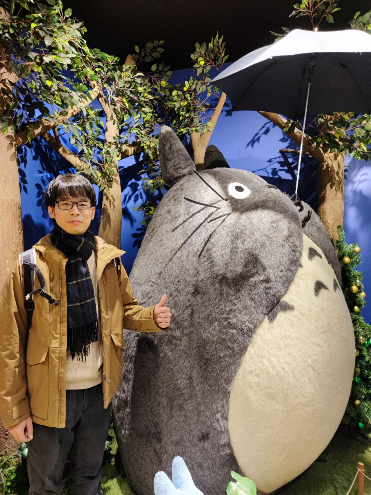

Weihao ZHUANG
I am a PhD student at Kobe University (Japan), where I studying on deep learning, high performance computing, model compression, and computer vision, etc.
Education
Papers
- Learn to See Faster: Pushing the Limits of High-Speed Camera with Deep Underexposed Image Denoising
Weihao Zhuang, Tristan Hascoet, Ryoichi Takashima, Tetsuya Takiguchi
Arxiv Preprint paper - Optical Flow Regularization of Implicit Neural Representations for Video Frame Interpolation
Weihao Zhuang, Tristan Hascoet, Xunquan Chen, Ryoichi Takashima, Tetsuya Takiguchi
Arxiv Preprint paper - Convolutional Neural Networks Inference Memory Optimization with Receptive Field Based Input Tiling
Weihao Zhuang, Tristan Hascoet, Xunquan Chen, Ryoichi Takashima, Tetsuya Takiguchi
APSIPA Transactions on Signal and Information Processing - Convolutional Neural Networks Optimization Inference with Splitting Image,
Weihao Zhuang, Tristan Hascoet, Ryoichi Takashima, Tetsuya Takiguchi, Yasuo Ariki
2020 IEEE 9rd Global Conference on Consumer Electronics (GCCE). IEEE, 2020. - Convolutional Neural Networks with Skeleton Kernel
Weihao Zhuang, Tristan Hascoet, Ryoichi Takashima, Tetsuya Takiguchi, Yasuo Ariki
The 23st Meeting on Image Recognition and Understanding (MIRU2020) - Optimizing the Computational Efficiency of 3D Segmentation Models for Connectomics
Weihao Zhuang, Hascoet Tristan, Ryoichi Takashima, Tetsuya Takiguchi and Yasuo Ariki
The 26th International Workshop on Frontiers of Computer Vision (IW-FCV2020) - Layer-Wise Invertibility for Extreme Memory Cost Reduction of CNN Training
Tristan Hascoet, Quentin Febvre, Weihao Zhuang, Yasuo Ariki, Tetsuya Takiguchi
Proceedings of the IEEE International Conference on Computer Vision Workshops (pp. 0-0).
- Reducing the Memory Cost of Training Convolutional Neural Networks by CPU Offloading
Tristan Hascoet, Weihao Zhuang, Quenti Febvre, Yasuo Ariki1, Tetsuya Takiguchi
Journal of Software Engineering and Applications, 12(08), 307.
- Reduce GPU Memory Usage of Training Neural Network by CPU Offloading
Weihao Zhuang, Tristan Hascoet, Ryoichi Takashima, Tetsuya Takiguchi, Yasuo Ariki
The 22st Meeting on Image Recognition and Understanding (MIRU2019)
Awards
Welcome to use this website's source code, just add a link back to here. ✩
No.
Visitor Since Feb 2022. Powered by w3.css